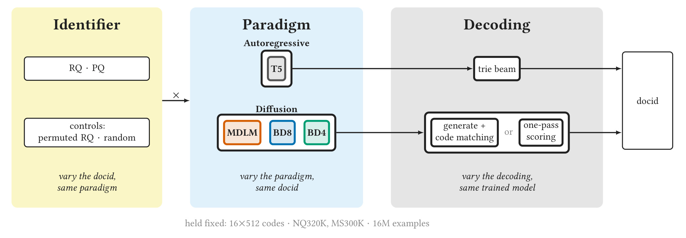
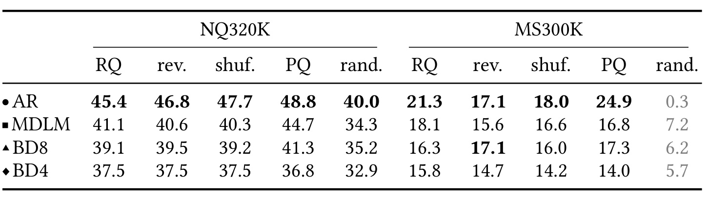
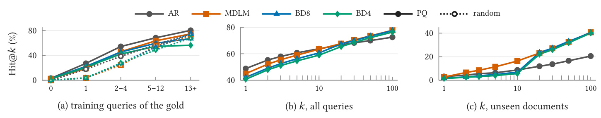
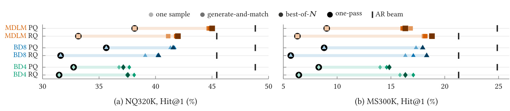
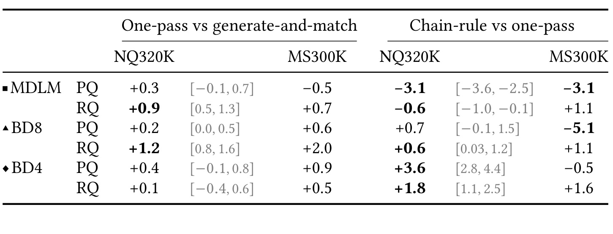
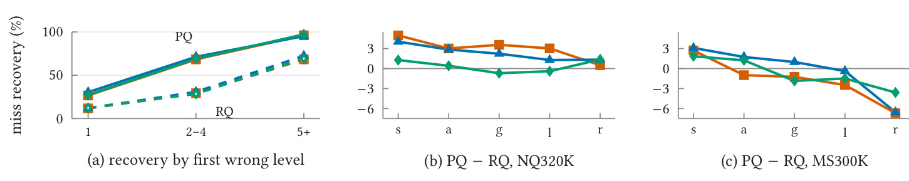
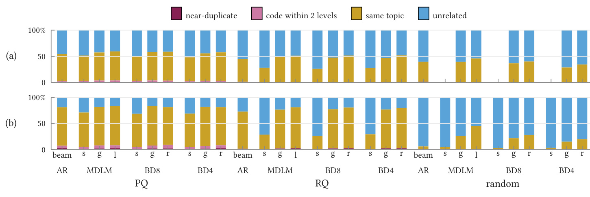

拆解生成式检索：范式、标识与解码究竟各贡献了什么
本文精读法国 Artefact Research Center 的 Hicham Randrianarivo、Logan Renaud 与 Alexia Allal 于 2026 年 10 月 6 日公开的 Disentangling Paradigm, Identifier, and Decoding in Generative Retrieval。它是一篇生成式检索的交叉对照研究，讨论自回归与扩散模型如何在相同文档标识形状和训练样本预算下检索文档。论文唯一入口。本文阅读范围包括主文、参考文献及全部附录。原文称代码与数据将在接收后发布，本轮未核验到本论文独立官方代码入口；原文脚注中的 DDRO 仓库是数据构造所用的他人基线，不能视作本论文实现。
论文要解决的核心问题是：已有生成式检索研究常在替换自回归或扩散范式的同时，修改文档标识、训练配方与解码器，使最终命中率差异无法归因。更隐蔽的问题是，扩散生成的标识本身可能不对应正确文档，却经全库匹配和重排获得较好的检索结果。作者因此交叉训练不同范式和标识，再固定检查点改变解码，检查模型究竟学到了语义、记忆还是检索后处理的收益。
1. 背景和问题
生成式检索把一个传统上需要搜索索引的问题，改写成条件序列预测：输入查询，输出相关文档的短标识序列。这个标识不是面向用户的自然语言答案，而是索引内部用于定位对象的一串离散码。只要模型能够正确生成它，就可以取回文档。对推荐系统而言，同样的方式可以把用户历史映射到商品标识；对搜索而言，它把文本查询映射到文档标识。两者共享离散候选寻址这一机制，但本论文实际实验是文档检索，不包含点击率、广告转化或在线推荐收益。
主流自回归模型逐位输出标识，每一步都依赖前面已经提交的位。若第一位错了，后续生成会沿着错误前缀继续，并可能越来越远离目标。实际系统通常把合法文档标识放进前缀树，用受约束束搜索确保每条最终路径都能落到候选文档。这比自由文本生成多了一层强索引约束：模型即使偏爱不存在的组合，也不能把它交给用户。比较自回归和扩散检索时，这层约束常与模型本身一起进入指标，因而必须单独检查。
扩散模型从全部遮罩的标识出发，多次预测并逐步提交离散码。全遮罩扩散可在不同位置之间选择揭示顺序，块扩散则先后处理连续块，同时预测块内的多个位置。直观上，它有机会减少从左到右的早期错误传播，并利用多个标识位之间的双向关系。许多已有研究因此把更好的效果解释为并行生成或迭代修正带来的收益。然而它们往往同时采用不同语义标识、不同规模的骨干模型、不同预训练语料、额外合成查询及不同候选匹配策略。这样的横向比较说明一个完整系统胜出，却不足以证明某一生成范式是胜出的原因。
本文的特别之处在于把对象拆成三层。第一层是标识，它决定什么离散序列代表什么文档；第二层是模型及其训练范式，它决定如何从查询学到码的分布；第三层是解码，它把模型给出的码概率转成最终排序。任何一层都可能明显改变检索质量。一个模型的单次随机采样可能差，而这个模型提供的逐位概率表仍然很好；一个语义码的自由生成容易错误，但按所有文档的现有码打分可能把目标找回来。因此不能把“生成出来的序列正确率”和“经过检索转换后的命中率”合并成同一能力指标。
原文相关工作沿着这三层整理。DSI、NCI 等方法采用层级标识和自回归解码，TIGER 采用残差量化语义码，DDRO 采用乘积量化码。扩散语言模型提供任意顺序填码或块内并行填码的机制，DiffuGR、MaskGR 及其他扩散推荐工作进一步将其用于检索和推荐。PAG、RPG 与多向量视角则指出，生成模型的概率本身可以作为文档评分信号，不必让最后一个生成结果承担全部检索责任。本文把这些线索合起来，但没有声称“一遍评分”这一思想完全起源于本研究；它的贡献是将现有并行评分规则直接应用到已经训练的扩散去噪器，并把效果置于统一的因素交叉实验中。
作者围绕三个问题展开。其一，每种范式究竟学到了什么：语义码是否真的支持未见文档泛化，还是训练集里的查询到文档对应关系被记住？其二，扩散模型生成的标识有多可靠，哪些解码真正找到正确文档？其三，乘积量化这种各位相对独立的标识是否特别适合并行解码，残差量化这种层级相关标识是否特别适合自回归？这三个问题彼此相关，却不能用一张最终排行榜回答。训练曝光分层、随机码控制、打乱标识位序、原始精确匹配率、不同候选深度以及固定模型的解码阶梯，分别用于定位它们。
读本文时还应保留一个边界：作者隔离最充分的是“同一个已训练模型换解码器”的影响，而不是训练范式的纯因果影响。自回归使用二亿六千万参数的 T5，扩散使用一亿八千二百万参数的 DiT；前者预训练语料是 C4，后者是 OpenWebText，训练超参数也不同。因此论文更接近一个公开骨干与适用配方条件下的系统比较。保持标识长度、词表形状和训练样本量相同，是显著改进，但不会消除骨干、预训练和每个样本有效监督位数的差异。
对实际召回研究而言，这种分析比一味寻找排行榜最高分更有价值。线上系统既需要前几位足够准确，也需要给后续排序留下足够多正确候选；需要处理热门物品，也需要让低曝光或新物品进入候选集合。单个总体命中率会被训练曝光较高的文档支配，导致语义泛化能力看起来比真实情况更强。若一个方法的主要优势在深层召回而不是首位命中，它仍然可能适合召回链路，但不能因此被描述成最佳直接答案系统。本文后续结果恰好呈现这一分离：自回归保持首位优势，扩散的一遍评分在未见文档的深层候选覆盖上更强。
这里的工程落点还包括检索结果的可解释归因：若收益来自更广的候选覆盖，应把候选集合及命中深度一起存档；若来自查询曝光，就应报告对象的训练计数。这样后续接入排序器时，才能判断新增正确候选是否真正转成最终排序收益，而不是把所有变化归结为模型结构。
最后，本文刻意只用真实训练查询，不把文档正文或额外合成查询映射到标识。这样未出现在训练查询目标中的文档不会被当作监督目标，研究者能够检验语义码是否独立支持它们。代价是这个训练设置未必代表所有实际生成式检索系统，特别是那些主动为每个文档构造训练查询的方案。由此得到的记忆结论，应解释为当前曝光结构与预算下的学习行为，而不是生成式检索永远无法泛化。
2. 方法
2.1 文档标识的残差、乘积与控制构造
交叉实验先统一标识的外形：每个文档用十六个离散位置表示，每个位置有五百一十二个可能码。位置与码的组合各对应一个新增词元，总计八千一百九十二个新词元；同样数字若出现在不同位置，也是不同的词元。这样固定了模型输出空间大小，避免因为序列更长、码本更大而改变问题难度。每种模型在每种标识上分别训练，再在同一训练检查点上比较解码。图一给出了因素交叉及保持不变的变量。

图中黄色区域决定文档编码，蓝色区域决定模型，灰色区域决定从概率到排序的方式。最强的局部控制发生在右侧：固定同一已训练模型，就能把解码差异与训练过程分离。中间区域比较范式时标识固定，但实际骨干与适用训练配方仍随范式变化。底部十六乘五百一十二的编码、两套数据和约一千六百万训练样本，是共同条件，不代表所有计算开销也完全相同。从设计图读实验，应先沿着同一个标识进入不同模型，再沿着同一个检查点比较右侧解码。前一种比较仍含模型骨干混杂，后一种比较才接近单因素实验。这使读者能够定位收益来源：文档编码是否更易预测，训练是否学到更好概率，或者候选筛选是否少丢目标。作者保留每一层的实验变化和参照条件，而不是把它们统称为扩散改进。
语义码都由 GTR-T5-base 的七百六十八维文档嵌入构造。残差量化先用一个码向量近似整个嵌入，再对未被解释的残差继续量化。这保留了层级依赖，但不保证每一层都能均匀区分文档。后续位不是独立维度的语义标签，而是前面近似已经确定之后的一次细化。其定义可以写成：
符号解释：$d$ 是文档，$e(d)$ 是文档嵌入，$l$ 是标识位置，$\mu_{l,k}$ 是该位置码本中第 $k$ 个聚类中心，$r_l(d)$ 是用前 $l$ 个中心近似后留下的残差。相似文档往往共享前缀，残差位只有结合早期位才有完整解释。这种粗到细的结构看似适合自回归，但也可能造成错误前缀下后续位失去意义。
乘积量化则把完整嵌入切成十六个四十八维切片，每个切片独立拟合一个码本。每个切片都直接编码文档嵌入的一部分，即使其他位预测错误，本位的含义也不会变成对错误残差的解释。因此这种构造允许后续匹配依据多个分散位置的吻合度继续寻找目标，而不必从正确前缀出发。各位表示不同子空间，没有哪一位负责解释上一位的残差：
符号解释：$L=16$，$e_l(d)$ 是第 $l$ 个嵌入切片，$\mu_{l,k}$ 是该切片的中心。所谓独立是编码构造独立，并不保证数据分布中的各码完全统计独立。相似文档可在任意多个位置共享码，不要求共享连续前缀。若并行预测真的特别偏爱这种结构，那么乘积量化相对残差量化的增益应随着同时提交的位数增加，并超过自回归上的增益。 控制组包括随机码和位序置换。随机码为每个文档一次性均匀采样十六个位置，确保文档之间不共享整串码；它保留长度、词表与寻址能力，却去除语义。若随机码仍能达到语义码的大部分表现，模型就可能主要依靠查询到标识的记忆。置换组反转或用固定随机排列重排残差位，保持每个文档的码值及碰撞情况不变，只破坏粗到细的顺序。它检验的对象比换成乘积码更窄：只问顺序是否重要，而不是同时改变所有离散结构。
2.2 查询条件化的自回归、全遮罩与块扩散训练
自回归模型采用 T5 1.1 base 的编码器解码器结构。编码器读取查询及固定检索提示，解码器交叉注意查询，随后逐位预测十六码以及结束词元。扩散模型采用十二层、宽七百六十八、十二头的 DiT，无独立时间步输入；MDLM 将整个标识作为一个块，BD8 分成两个八位块，BD4 分成四个四位块。块按照从左到右顺序处理，而块内的位可以并行揭示。这个连续谱使研究不只是二元比较“自回归还是扩散”，还检查提交粒度的影响。 扩散的查询条件化非常关键。公开扩散骨干本来只建模文本，论文把最多一百二十八词元的查询放在始终干净的前缀，只遮罩文档标识。在训练和推理中，查询都不会被腐化。每个标识位的噪声遵循：
符号解释：$t\in[0,1]$ 是遮罩概率，$m$ 是遮罩词元，$c_l$ 是正确标识的第 $l$ 位，$z_t^l$ 是腐化后的输入。MDLM 对查询与部分遮罩标识拼接序列使用双向注意力。块扩散同时有干净流和噪声流；当前噪声块可以看查询、当前块及先前的干净块，不能提前读取未来干净标识。这避免训练时泄漏答案，也意味着后续块通常依赖先前块已知的上下文。
所有骨干权重都会微调，新增输入及输出词元行用预训练行的均值初始化。自回归损失按顺序计算条件概率：
符号解释：$q$ 是查询，$\theta$ 是模型参数，$c_{<l}$ 是前面正确标识位。公式列出标识部分；实际训练还包括结束词元，并使用零点一标签平滑。每个样本的各位都有监督，自回归模型在相同样本预算下接受的预测监督比随机遮罩模型更多。
扩散训练对每块独立采样遮罩概率，只在被遮罩的位上计算预测损失。查询前缀与未遮罩位只作为条件，不成为需要恢复的目标；块噪声独立采样使每个块看到不同难度，但先前干净块仍为其提供训练时的正确上下文。因此平均样本量相等也不意味着每个位被监督的次数相等，必须按目标位再检查有效监督。其损失为：
符号解释：$B=L/k$ 是块数，$k$ 是块宽，$t_b$ 独立均匀采样，$M(z)$ 表示被遮罩位置集合，$c_{<b}$ 是此前干净块。MDLM 对应 $B=1$。原始扩散方法使用每块的逆噪声权重 $1/t_b$，使损失成为似然界；本实验去掉这一权重。因此不能把当前训练损失直接称为与标准扩散似然界完全相同的目标。这个选择也说明，本研究比较的是具体检索适配配方，而不只是数学意义上的生成范式。
固定样本预算不等于固定监督量或固定计算量。共同训练条件包括 AdamW、梯度裁剪一、零点一 dropout、混合 bfloat16 以及约一千六百四十万样本曝光。自回归使用六万四千步乘二百五十六批大小，MDLM 使用三万二千步乘五百一十二，块扩散使用六万四千步乘二百五十六。学习率、权重衰减和调度器则分别选择适用配方：自回归线性衰减且无预热，扩散百分之三预热后恒定。样本预算一致不意味着模型计算量、训练时间或有效预测位数一致，本文没有将它们混成同一个控制。
2.3 从生成匹配到全库一遍评分的解码阶梯
自回归以宽一百的前缀树束搜索作为参照。每步只保留能够延伸到合法文档码的分支，最终按整条路径对数概率排序。作者另测有树及无树的贪心生成，以区分模型条件分布质量与搜索带来的收益。无树贪心若生成不存在的整串码，直接记为失败；有树贪心始终返回合法文档。两者不能看成完全相同的基线。 扩散从全遮罩码开始反向迭代。噪声由 $t$ 降到 $s$ 时，被遮罩位置以 $(t-s)/t$ 的概率揭示；随机采样从预测分布取码，argmax 取最可能结果。由于保持遮罩在末步前通常是最可能选项，argmax 会在块的最后一次同时提交整块。MDLM 因此等价于从全遮罩输入上的概率表一次取所有位的最大概率码。产生的组合仍可能不在语料库，故后续必须定义如何匹配现有文档。 最基本的 code matching 按生成码与每个文档码不同的位置数量取最近一百个候选，距离相同时按语料顺序处理。参考 generate-and-match 则先 argmax 生成，再匹配，再按全遮罩输入下的逐位概率重排。best-of-eight 生成八个随机样本，合并各自近邻，再使用同一评分规则。这个规则为：
符号解释：$z_1$ 表示所有标识位均被遮罩，$c_l(d)$ 是库内文档 $d$ 的真实码。模型一次前向输出 $L\times K$ 的对数概率表，一个文档需要 $L$ 次查表及累加。该得分是各位边际概率的乘积形式，不是显式建模全部位间依赖后的完整联合似然。对于 MDLM，它对应全遮罩项；对于块扩散，训练通常要求早期干净块，故该评分不对应其训练界的相同条件。
one-pass scoring 直接跳过生成，把这一分数用于所有库内文档，再取前一百。它与 generate-and-match 用同一分数，差别在候选范围：前者全库，后者某个生成码的近邻。因而一遍评分的收益可以来自消除候选漏召，而不需要证明扩散迭代更好。模型前向只有一次，但全库计算依然有 $O(NL)$ 的查表累加成本，$N$ 是文档数。不能把“一遍”解读成检索免费，更不能把它描述为天然支持十亿规模无索引搜索。
链式重评分则对一遍评分的前二十候选逐位揭示真实前缀，累计条件概率，用每个候选每个位置的一次前向近似联合似然。这恢复了块扩散训练中常见的早期块信息，却显著增加计算。由于其候选名单仍来自一遍评分，候选外的正确文档无法被救回；它只检查局部排序是否改善。原文还比较从右到左、按置信度揭示及按块揭示的顺序，说明“加上下文”并不自动等价于更好的相关性评分。
3. 实验结果
3.1 数据、训练曝光与标识对照
NQ320K 实际有一十万九千七百三十九文档、三十万七千三百七十三训练查询、七千八百三十评估查询。其一千七百一十三文档从未成为训练查询的正确目标，对应一千七百五十五评估查询，占评估集百分之二十二点四。MS300K 有三十一万九千九百二十七文档、三十六万七千零一十三训练查询及八百零八评估查询，所有文档均有训练查询。后者通过 DDRO 脚本构造，只约占 MS300K Document 的十分之一，而且评估集并非标准五千一百九十三查询开发集。因此这些表中数值不能与任意名字类似的完整 MS MARCO 排行榜直接横比。

表一的指标为首位命中率，单位百分比。NQ 上自回归的 RQ、PQ 与随机码分别是四十五点四、四十八点八、四十点零；MDLM 分别是四十一点一、四十四点七、三十四点三；BD8 为三十九点一、四十一点三、三十五点二；BD4 为三十七点五、三十六点八、三十二点九。自回归在学习所得码上领先或并列。灰色随机码结果是预算内未收敛，不应当被写成该范式的固有上限，也不能因为最佳值加粗就宣称统计显著。阅读网格时应先横向观察同一范式换码，再纵向观察相同码换模型。两者都不能跳过灰色未收敛控制组的含义。尤其在MS上，随机码的低得分同时包含样本曝光不足和训练困难，无法与NQ保持率混合计算；跨语料训练目标的覆盖才是理解差异的必要背景。
这张表最有解释力的地方是 NQ 随机码保留 RQ 的百分之八十三到九十首位表现。没有语义的码仍能检索，说明查询监督中的对象对应关系足以支撑相当大一部分指标。它不是“语义无效”的结论：低曝光及未见目标仍受益于语义码，MS300K 随机码更没有在预算内学成。两套数据每个文档的训练曝光相差明显，约一百四十六对五十次，这为记忆程度提供解释。相同总训练预算面对更大文档库，并不意味着每个对象获得同样的学习机会。

图二左侧按目标文档拥有的训练查询数分组。所有范式都随曝光增加而提高首位命中。只有一个训练查询时，扩散随机码约百分之四，而 PQ 可达百分之十九到二十二；训练查询超过十二个后随机码追上。因此总体随机码比值掩盖了长尾对象上的语义价值。右侧未见文档曲线进一步指出，语义码虽没有显著改善首位，却能使正确文档进入更深候选列表；这比只看总体命中率更贴近召回阶段需要。三幅面板回答不同问题。左图采用参考生成匹配解码，右侧按各范式最佳解码比较，因此不能把左图随机码结果套到右图全库评分条件。共同信息是目标文档监督可见程度与检索深度必须同时记录；平均首位数值不能代表新文档覆盖，也不能把最佳解码条件当作所有生成方法均具有的能力。
精确分层结果见附录表七：PQ 的已见文档首位，自回归六十二点零，MDLM 一遍评分五十七点二，差四点八；未见文档首位分别三点二和二点七，只有零点五差异。到前一百候选，未见文档 MDLM 四十点七，自回归二十点六，约为四十一对二十一。自回归在首位更好与 MDLM 在深层更好同时成立，两者服务的阶段不同。把束宽增至五百仍不改善自回归的前一百命中，提示简单扩大搜索宽度未必能消除它的排序结构限制。
标识本身也有显著非理想结构。附录表五中 NQ RQ 第二位熵仅零点二八比特，百分之九十八点二文档共享第二位最高频码；PQ 每位约八点九六比特。但十六个位的熵总和不能当作整体唯一信息量，整体区分文档的信息上限只有文档数的对数，NQ 约十六点七四比特。PQ 碰撞率一点三七五个百分点，比 RQ 零点零九一个百分点高。本文按码评价，使相同码的不同文档不能区分；改按文档评价时自回归 PQ 对 RQ 的优势从三点四缩到一点九，仍为正。语义编码的质量因此必须同时报告熵、前缀唯一性和碰撞，而不能只报告码本大小。
3.2 解码收益及统计区间

图三每一行固定同一范式与标识，变化仅是解码。以 NQ 的 BD8-RQ 为例，单样本匹配首位命中三十一点六，argmax 匹配三十五点四，generate-and-match 三十九点一，八样本四十点二，一遍评分四十点三。整个实验里从单样本到最佳解码提升六点六到十三点七个百分点，远大于许多范式差距。反过来，自回归黑色参照刻线仍在所有行之前，因此改善解码没有在首位上全面推翻自回归优势。同模型解码跨度和模型间差距应分别计量。每行最浅色单样本点不是扩散唯一能达到的表现，最深色点也不是免费获得，因为全库评分仍读取所有文档码。黑色刻线仅代表相同标识上的自回归束搜索；它与扩散点的距离还含骨干和训练差异，不可直接解释为因果范式差距。
附录及主文诊断指出，生成码精确等于正确码的 NQ 查询只有百分之十四到二十一，匹配与重排后则达到百分之三十七到四十五。错误生成中百分之五十四到六十至少错八个位。这不是“几乎正确的一串码只需修一两个位”的情形，检索后处理承担了很大的任务。若只展示处理后的命中而省略原始精确匹配率，就可能把全库近邻和重排能力误认为去噪生成能力。八样本相对参考解码的变化仅负零点七到正一点二，也提醒额外采样并不稳定换来高收益。

表二左边显示一遍评分在十二种组合中十一种点估计达到或超过 generate-and-match，唯一例外是 MS300K 的 MDLM-PQ，下降零点五。NQ 六种组合只有 MDLM-RQ 与 BD8-RQ 的百分之九十五配对区间排除零，分别提升零点九，区间零点五到一点三，以及提升一点二，区间零点八到一点六。MDLM-PQ 的零点三区间为负零点一到零点七，BD4-RQ 零点一区间为负零点四到零点六，不能宣称显著提升。表内 MS 区间没有展示，也不应凭正点估计补出显著性。配对区间对同一批查询的系统差值做bootstrap，检验具体解码变化，而不是所有训练种子下的稳定性。表中加粗与未加粗有不同统计含义，且未展示MS区间。复现还应记录重复训练的结果，结合查询区间判断可靠性；十一种点估计不差，不能自动改写成十一次显著胜出。
“一遍评分追回多少差距”还依赖比较起点。以 MDLM 相对自回归束搜索的差距为分母，从一个随机样本出发，NQ 的 PQ 与 RQ 分别追回百分之六十四和七十二，MS 为四十六和八十三；但从 generate-and-match 出发，NQ 只有八和二十，MS 为负六和二十三。这说明一遍评分主要替代弱采样方案时显得收益很大，相对已经带匹配与重排的强解码则只追回至多约四分之一。工程评估应选择正在使用的完整基线，而不能特意拿最弱采样作为收益分母。
一遍评分最大的稳定收益在候选覆盖。原本首位失败的查询中，正确目标完全不在候选里的比例下降十九到三十一个百分点，使首百命中比首位命中改善更多。NQ PQ 的 MDLM 一遍评分首十为六十三点五，与自回归六十三点八接近；首百比自回归高五点二。RQ 首十六十点一对五十八点九，首百高三点一。此处合理解释是全库评分减少候选门控遗漏，不是已经证明迭代扩散产生了更精确序列。
链式重评分则没有统一正收益。NQ BD4-PQ 增三点六，MS BD8-PQ 却降五点一；MDLM-PQ 在两套数据都降三点一。块扩散后续块第一位在全遮罩条件下准确率可接近零，因为训练从未要求它在没有干净早期块的情况下预测；揭示前缀能恢复信号。MDLM 则全遮罩时各位准确率在四十七到五十二之间较平，新增前缀没有同样的恢复作用。附录表九把 MDLM 重评分名单从二十扩到一百，PQ 命中仍降零点四，说明名单过短不是其全部原因。
3.3 标识与范式交互，以及错误落点

图四左边把错误按首次偏离正确码的位置分组。若前四位就出错，PQ 正确文档留在候选中的比例约是 RQ 的二点三倍；后面才错时约一点三到一点四倍。这符合编码结构：PQ 其他子空间的正确码仍能提供相似性，RQ 后续位是特定早期残差状态下的修正，错误早期位更容易使距离失去寻址价值。这是标识的恢复性质，不足以单独证明某一种生成范式更懂语义，因为不同范式的恢复曲线只差几个百分点。纵轴表示失败后的恢复比例或两个标识的首位差，不能当作整体准确率。首次错误分组已经条件化在失败查询上，反映码空间能否保住目标；右侧曲线表明恢复与最终命中还受解码重排影响。编码几何、生成质量与排序是不同证据，需要联系起来解释。图中的这一条件化区别也限制了结论外推范围。
中右两图显示 PQ 相对 RQ 的优势随解码改变。NQ 在参考解码下自回归优势三点四、MDLM 三点六、BD8 二点二、BD4 负零点七。虽然扩散内部更大块偏好 PQ，但逐位自回归也获得近似 MDLM 的优势，不能据此说独立码专属并行。作者以超过正负两个命中百分点才视作实质交互：参考解码下自回归差值减平均扩散差值为一点七，在门槛内；一遍与链式解码变成二点一和二点三；各自最佳解码为一点五。研究结论对解码选择敏感，恰是本论文要强调的内容。
MS 上情况更明显：一遍及链式解码都使扩散倾向 RQ，链式条件下 RQ 领先三点六到六点七，自回归却偏向 PQ。观察到的交互方向反而不支持简单的“并行一定偏好独立码”直觉。作者将这一结果作为提示，而不是跨数据集规律，因为 MS 随机控制未收敛且指标只建立在八百零八查询上。反转或打乱 RQ 顺序也具有数据依赖：NQ 自回归提高一点四和二点三，MS 则降低四点二和三点三；对扩散 NQ 变化不到一点，不能把序列粗到细的必要性写成普遍事实。

图五对首位错误作互斥分类，先判断近重复，再判断码最多错两位，再用 TF-IDF 余弦阈值判同主题，最后归为无关。这样分类结果受顺序和阈值影响，不是人工标注的通用相关性等级。学习所得码在同一数据和解码下，不同范式错误画像很近；改变标识、数据集和解码则会明显改变。NQ PQ 的自回归错误同主题占五十二点二，MDLM 一遍评分五十五点六；RQ 则分别四十三点九和五十点一。随机码主要返回无关对象，说明记忆能支撑不少首位命中，却不会保留同样的错误语义结构。图中只是首位错误的构成比例，不是所有查询的绝对错误量；两个模型色块相近，错误总数也可能不同。近重复和近码比例小表明多数错误并非碰撞或少数位置预测偏差。主题相近是文本相似性诊断，而非人工相关性标注，不能直接代替下游满意度。
这个结果还有一个实用解释：若深层候选给下游重排，语义上相近但首位错误的文档与完全无关文档的代价不同。原文并未测重排或用户满意度，不能因此宣称完整系统已改善，但错误落点能帮助设计后续评测。八个学习码系统的理想选择器在 NQ 能达六十二点六，而最佳单元四十八点八；MS 四十九点一对二十四点九。这只是知道正确答案时的 oracle 上界，表明错误部分互补，不是一个已实现的集成召回增益。
4. 总结
本文最稳固的结论是，生成式检索的最终效果由模型、标识和解码共同决定，而固定检查点换解码可带来比范式差距更大的变化。一遍评分让模型在全遮罩输入上输出每位概率，然后遍历合法文档标识评分，避开了“先生成一个码再只搜其近邻”的候选限制。它在十二种扩散组合中十一种点估计不差于参考解码，并显著改善深层目标保留。这个结论有直接复现价值：现有扩散检索检查点可以首先加上该解码对照，不必立即重新训练或改整个标识系统。
但首位排行榜仍由自回归领先，且无法单独归因于范式。T5 参数更多，C4 预训练文本约是扩散 OpenWebText 的二十倍；随机初始化自回归的 NQ PQ 首位降到四十点六，比预训练自回归低八点二，也低于 MDLM 的四十四点七。AR 配方用于扩散会坍塌成常数输出，故必须用各自适用配方。公平比较并不等于机械锁定所有超参数，而是先确保每个系统能正常训练，再清楚说明剩余混杂。未来若要回答范式因果问题，需要进一步统一骨干、预训练数据和有效监督预算。
语义码的价值也需要分层读。NQ 随机码保留百分之八十三到九十的 RQ 首位表现，说明总体指标中的记忆占比很大；低曝光对象和未见文档却依然依赖语义结构。MS 随机码预算内未收敛，不能把 NQ 结论推成所有检索系统都只在记忆。相应地，推荐任务上的迁移实验应按用户及物品曝光分层，再定义训练期未见物品及新增物品的评测。否则一个面向热门对象的高平均数，会遮住本来希望语义标识解决的长尾问题。
对召回链路，本文提供了三个可操作方向。先报告原始整码精确率与匹配后命中，把生成和索引后处理分开；再对同一模型测采样、生成匹配、全库评分，判断丢失目标发生在模型概率还是候选门控；最后同时报告首位、首十及首百，区分直接排序能力与候选覆盖。若全库评分成本过高，可以探索利用逐位概率表的索引搜索或近似剪枝，但这是本文提出的后续方向，尚无大规模延迟证明。全文没有给出生产级吞吐、线上收益或亿级候选开销，因此不能承诺一遍评分可直接替代已有高效召回索引。
下一步最值得验证的是，一遍评分的收益究竟有多少需要扩散训练。因为推理时模型实际像一个逐位分类器，并不迭代去噪，应该增加同架构非生成逐位分类基线，使用相同标识和监督预算。第二个方向是训练触达未见文档：作者给训练文档增加每篇十条合成查询，在相同样本总量下让真实查询被看到的频率约降低四点五倍，MDLM 的已见首位下降十三点五，而未见上升一点一。这说明数据分配存在明显权衡，需要对新文档覆盖和已见查询记忆单独优化。第三个方向是重新检查标识碰撞及残差熵，让语义码设计与实际文档区分能力对齐。
本笔记据完整 PDF 原文解释，所有数值仅限相应数据、模型规模、训练预算与评测口径。代码尚未核验到本论文独立公开入口，附录确认的 DDRO 脚本属于他人数据基线；方法可读不代表已经完成可运行复现。应优先复现固定检查点的解码对照与 seen/unseen 分层，再讨论更大模型或真实推荐场景，避免把一个有价值的实验诊断扩大成未经验证的普遍结论。